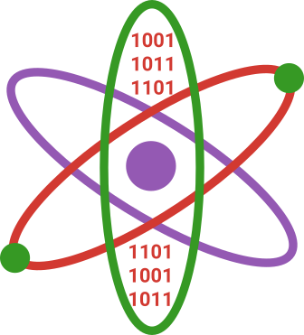
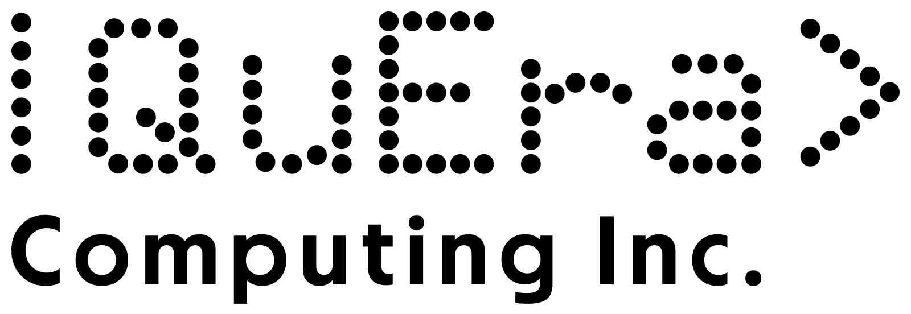

 Numerical Methods
Summer School at the Mount Ida campus of University of Massachusetts Amherst
(a satellite campus on the outskirts of Boston)
August 12th (Mon) - 18th (Sun)
co-located Mitiq workshop August 17th
Numerical Methods
in Quantum Information Science
Summer School at the Mount Ida campus of University of Massachusetts Amherst(a satellite campus on the outskirts of Boston)
August 12th (Mon) - 18th (Sun)
co-located Mitiq workshop August 17th
Target audience
Folks with QIS expertise and baseline programming skills searching to significantly expand them.Graduate Students, Postdocs, and Professionals
Graduate students, postdocs, and professionals in Quantum Information Science who want to supercharge their classical programming skills.Exceptional Undergraduates
Talented undergrads will be admitted on case-by-case basis after reviewing their applications. Free admission and travel grants will be available to undergraduates.Hackers
The summer school will end with a hackathon where participants are empowered to make their first contribution to an open source project, flesh out the first software steps necessary for a novel result in QIS, or design and control quantum hardware.Curriculum
Providing significant breadth of skills in QIS.General software engineering practices and cluster computing tools
Advanced general scientific programming (ODEs, optimization, autodifferentiation)
GPU programming
Fast general purpose wavefunction simulation
Tensor networks for faster approximate quantum simulations
Stabilizer formalism for quantum ECC
Discrete event simulations (e.g. for networking)
Quantum chemistry
Symbolic computer algebra basics
Optimal control of quantum hardware
APIs for control of commercial quantum hardware
Quantum error mitigation
Sponsors, Presenters, and Instructors from

